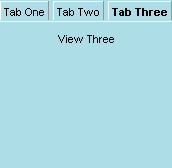

| Attributes | Common Children |
| align | <tabbox> |
| class | <tabpanel> |
| id | |
| flex | |
| orient | |
| autostretch |
<tabcontrol> is the top-level element in the tab widget set. Like the <window> element for XUL files, <tabcontrol> must encapsulate all of the other tab-related elements in order to work properly. Tabcontrol declares that the tab widgets will be used within the given XUL file. Like many of the other tab widgets, tabcontrol inherits from box, so all of the layout attrtibutes associated with that element can be used here. The following example shows <tabcontrol> as the root element of a basic tab widget:
Note that the look most often associated with tabbed folders is achieved by using the align="vertical" attribute on the tabcontrol. Aligning the tab widgets horizontally, though useful in some cases, positions the tabbed panels beside the tabs themselves.

Last updated: 13:10 1/26/00 Ian Oeschger